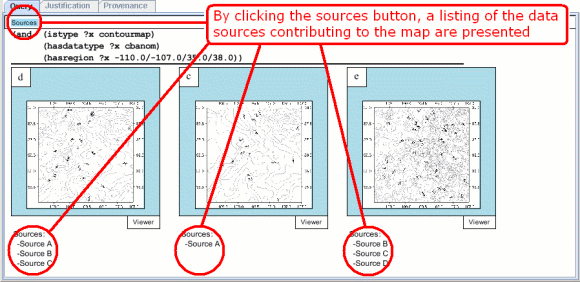

By clicking the Sources button as shown in the figure, the summary or sources feature can be accessed. This feature presents the data sources (i.e., people, organizations) that contributed to a particular map. The sources are listed just below each map. |
|  |